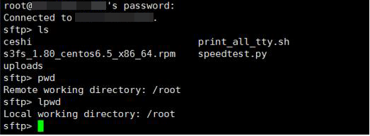
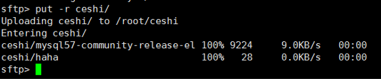
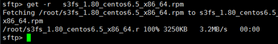

You want to use SFTP to transfer files between a local Linux computer and a Linux ECS. The following uses CentOS as an example.
Information similar to the following is displayed:
# OpenSSH_7.4p1, OpenSSL 1.0.2k-fips 26 Jan 2017
groupadd sftp
useradd -g sftp -s /sbin/nologin user1
chmod 755 -R /home/user1
mkdir /home/user1/upload
chown -R user1:sftp /home/user1/upload
chmod -R 755 /home/user1/upload
vim /etc/ssh/sshd_config
#Subsystem sftp /usr/libexec/openssh/sftp-server
Add the following information:
Subsystem sftp internal-sftp Match Group sftp ChrootDirectory /home/%u ForceCommand internal-sftp AllowTcpForwarding no X11Forwarding no
service sshd restart
Alternatively, run the following command to restart sshd:
systemctl restart sshd

To upload files or folders, run the put -r command.

To download files or folders, run the get -r command.
